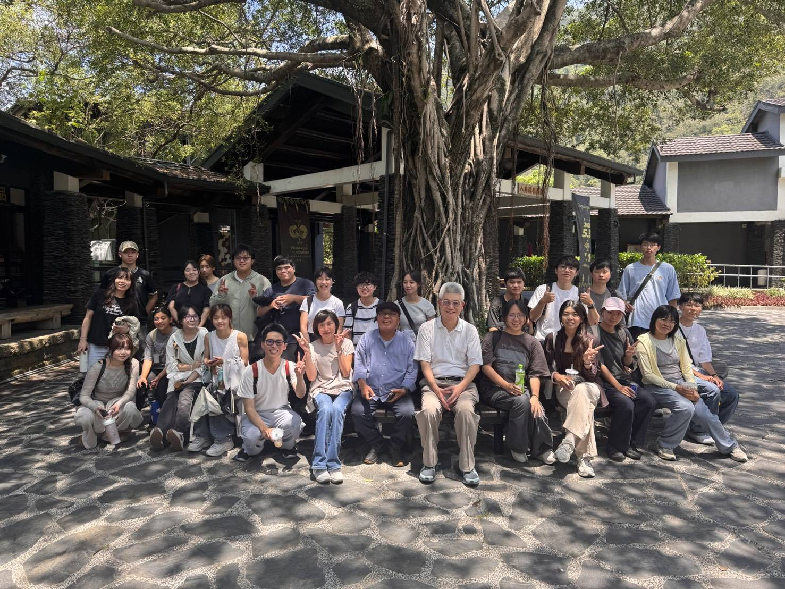
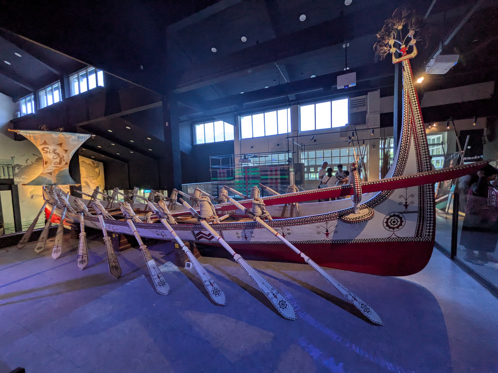

生命歷程中的自然材料
展覽中可以看見，物質文化承載著生命的溫度。從出生到死亡，自然材料都以溫柔的方式參與族人的生命歷程。
例如排灣族與魯凱族常用的月桃編織，在嬰兒誕生時可以是迎接新生命的搖籃；當生命走到盡頭，月桃蓆也能包裹族人的身體，陪伴靈魂平穩離開人世。這些取之於自然的材料，不只是日常工具，也在生命起點與終點之間提供守護。


穿戴出的身分與責任
身上的飾品與紋樣，就像族人在社會結構中的座標。對擁有階級制度的部落而言，精緻工藝、特定紋飾如人頭紋與百步蛇紋，以及琉璃珠等珍貴材質，都能標示身分與榮耀。
對勇士來說，山豬獠牙臂環、綴滿貝珠與串鈴的長衣，也象徵戰功與保護家園的事蹟。這些物件讓每個人在族群網絡中找到位置，同時提醒穿戴者必須承擔相應的責任。
文化不是停在展櫃裡的物件，而是族人與祖先、土地和自然持續互動的生活記憶。
只取所需的環境智慧
族人的智慧也體現在與自然環境建立的謙卑契約中。阿美族人常說「大海就是冰箱」，背後是一種對自然的信任與自律：只捕捉生活所需的漁獲，不多取、不濫捕，讓生態系統得以維持平衡。
雅美（達悟）族對食魚種類的規範，也展現對萬物生養的感謝與珍惜。這種「只取所需」的生存方式，不只是資源管理，更是對土地、海洋與神靈的長期承諾。
Pulima 與當代傳承
面對現代社會的衝擊，展覽也呈現許多「厲害的手（pulima）」如何創造當代文化回聲。曾一度失傳的傳統，如噶瑪蘭族香蕉絲編織、阿美族樹皮布工藝，都在族人反覆試驗與記憶追尋中重新復甦。
傳承也展現出新的彈性。過去「男獵女織」的分工正在被重新理解，男性可以參與織布，女性也能投入藤編。傳統因此不是被固定保存，而是在新的材料、技術與美學中繼續生長。
帶回《森循島》的提醒
這次參訪讓我們明白，文化是活的記憶。工藝、祭儀與自然智慧讓族人連結祖先，也讓人與土地保持關係。這些內容不只傳遞物質文化，更承載原住民族對生命、土地與祖先深厚的情感。
對《森循島》而言，這也是重要提醒：永續教育不應只談資源與環境，更要看見文化如何教人與自然相處。當遊戲能把土地、記憶與生活智慧一起放進玩家的選擇裡，永續才會成為更有溫度的體驗。